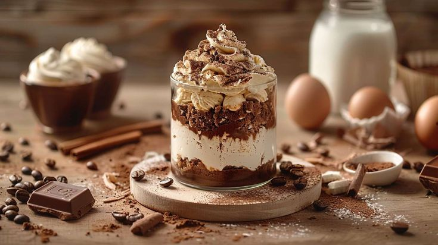
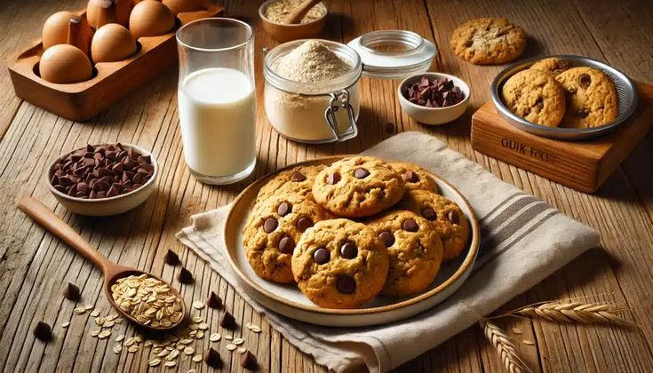
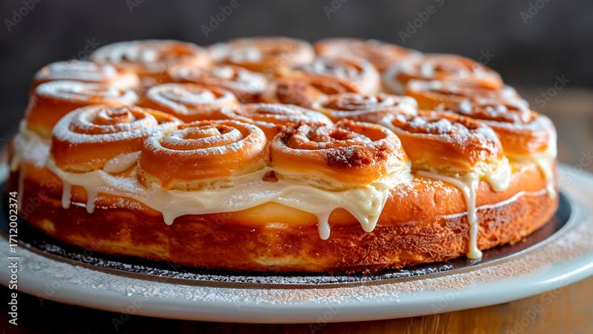
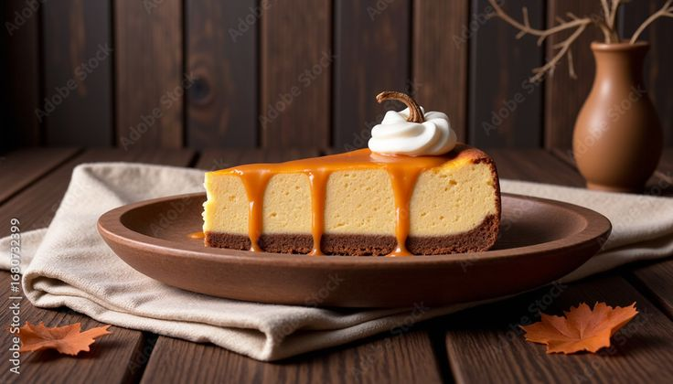
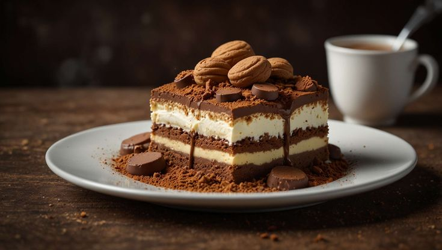

Baking Tips
- Thoroughly read the recipe to understand all the steps.
- Use fresh ingredients for the best flavor and texture.
- Measure ingredients accurately using proper measuring tools.
- Do Mise en Place, wherein you prepare all the ingredients, measure all the things that you need to measure, and chop all the things that need to be cut.
- Clean and prep all the pans that you will be using, and preheat the oven if you will use it.
- Let baked goods cool completely before frosting or serving.